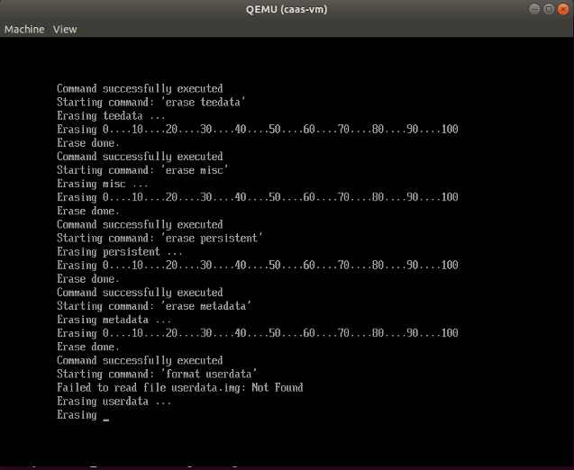

This page explains what you’ll need to run Celadon in a virtual machine.
Depending on your applications, you can run CiV using
Intel® GVT-g technology, or allowing for GPU passthrough to a single
Android* guest VM through Intel® Virtualization Technology (Intel® VT) for
Directed I/O (Intel® VT-d) technology, or VirtIO GPU, or pure
software rendering.
An Intel® NUC with an eighth generation or newer Intel® Core™ Processor.
Ubuntu* 20.04 (Focal Fossa) preinstalled which runs Linux* kernel
version 5.0.0 or above.
Note
CiV releases have been validated on
Intel NUC model NUC7i5DNHE. Releases after April 17th 2020 are
validated on Intel NUC model NUC10i7FNK and NUC10i7FNH to
take performance advantages of 10th Generation Intel Core Processors.
Intel® Graphics Virtualization Technology (Intel® GVT) covers three distinct
flavors of graphics virtualization approaches. Among these approaches,
Intel GVT-d is based on Intel VT-d
technology, it also includes additional graphics related configuration
options when compared to standard NIC pass-through devices.
Intel GVT-d allows direct assignment of an entire GPU’s capacity to
a single user, passing the native driver capabilities through the hypervisor
without limitations.
Refer to this article
for introduction on Intel Graphics Virtualization Technology.
The host device that launches the virtual machine requires Ubuntu 20.04.
To simpify the preparation works, a helper script setup_host.sh is
provided.
The script re-builds the OVMF.fd firmware and QEMU emulator
from source depending on the target graphics virtualization technology,
and installs the required software on the installed Ubuntu system for running
Celadon in a VM with QEMU.
Download and extract release
package(caas-releasefiles-<$buildvariant>.tar.gz)
from: celadon-binary
Meanwhile, you can also refer Build Celadon in VM image section to build release
packages.
The Linux kernel is extremely important on every Android device. Google*
recommends using AOSP common kernels on Android devices to include
features and implementations required by Android.
In addition to the AOSP common kernel, Celadon also integrates several
staging patches
to take advantages of high performance new Intel processors,
so it’s strongly recommended to run the Celadon kernel as the host OS,
especially running CiV on NUC10i7FNK or NUC10i7FNH Intel NUC devices.
To that end, a
helper scriptbuild.sh is designed to facilitate
the building and deploying of Celadon kernel on a Ubuntu host.
Refer to the README for detailed instructions.
Refer to the Build Celadon in VM image section in the Getting Started Guide and
specify caas as the lunch target to build the CiV images. The
following CiV image types are generated at the end of the build:
caas.img
The GPT disk image for direct booting. Skip next section to
boot the CiV image with QEMU.
caas-flashfiles-eng.<user>.zip
The compressed flashfile package contains the Celadon partition images for running in a VM.
Proceed with the following section to install these images to a virtual
disk image in qcow2 format.
caas-releasefiles-<$buildvariant>.tar.gz
The release tar ball contains all required flashfiles/scrips for running
Celadon in VM.
Skip this section if you plan to boot the device directly with the GPT disk image caas.img.
Follow the instructions below to create and set up CiV partitions on
a qcow2 formatted virtual disk.
Run the helper script start_flash_usb.sh.
$ cd ~/civ
$ sudo ./scripts/start_flash_usb.sh caas-flashfiles-eng.<user>.zip
By running the start_flash_usb.sh script, a QEMU window will be popped up, it
will drop to the built-in UEFI Shell and start flashing the partitions to
the virtual disk image.

The QEMU window will be closed automatically once flash complete.
Now we get the CiV virtual disk android.qcow2 under the current
directory.
Enter the following commands to run the script start_civ.sh with
root permissions to facilitate the booting of CiV images with QEMU.
$ cd ~/civ
# The following command runs CiV using Intel GVT-g
$ sudo -E ./scripts/start_civ.sh -g GVT-g
# The following command runs CiV using Intel GVT-d, and passes# all the attached USB devices such as keyboard, mouse to the VM.
$ sudo -E ./scripts/start_civ.sh -g GVT-d --passthrough-pci-usb
You can pass-through not only the GPU but also the USB host controller (xHCI)
to the Android VM, in order to attach all the connected USB devices
(e.g. camera, USB thumb drive) to the VM.
By passing --passthrough-pci-usb argument to the start_civ.sh
script, all the USB devices connected to the platform get automatically
enumerated inside the Android VM:
# The following command pass-through the xHCI to the VM
$ sudo -E ./scripts/start_civ.sh --passthrough-pci-usb
Warning
All the USB devices, including keyboard and mouse, will be disconnected
from the host OS and get attached to the Android VM.
An alternative methodology is to passthrough only selected USB devices
to the Android VM by modifying the start_civ.sh script.
For example, to pass-through the USB SD card reader in the following list,
whose vendorID and productID are 14cd and 125c respectively:
$ lsusb
Bus 004 Device 001: ID 1d6b:0003 Linux Foundation 3.0 root hub
Bus 003 Device 001: ID 1d6b:0002 Linux Foundation 2.0 root hub
Bus 001 Device 003: ID 8087:0a2b Intel Corp.
Bus 001 Device 005: ID 093a:2510 Pixart Imaging, Inc. Optical Mouse
Bus 001 Device 004: ID 1c4f:0002 SiGma Micro Keyboard TRACER Gamma Ivory
Bus 001 Device 008: ID 14cd:125c Super Top SD card reader
Execute start_civ.sh script as below, to enumerate the device
in the Android VM:
In case your hardware platform supports SD cards through the SDHCI controller, you can enable
SDHCI mediation by adding -b <sdcard block device> option
argument while invoking the start_civ.sh script if the SD card is present
in the slot.
With the following command, the SD card interface will be mediated to the
Android guest OS, and Android will mount the SD card on boot.
The external SD card mount is validated with sdcardfs file system and the
mount point is available in the standard UI interfaces like file explorer,
storage settings etc.
The audio controller can be passd through to the guest
by adding --passthrough-pci-audio argument while invoking the
start_civ.sh script, the host then has no control over it.
With the above setup, PCI controllers, which are part of the same IOMMU
group as the audio controller, will also be pass-through to the guest.
For example, if the Ethernet controller and the audio controller are
in the same IOMMU group, the Ethernet controller will be moved to the guest.
Thus if you are connecting to the host via Ethernet, the network accesses to
the host will be drop. Since the Android guest has accesses to the Ethernet
controller, you can connect to it using the command: